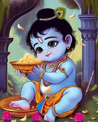
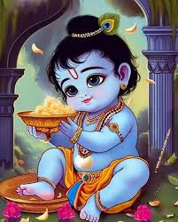
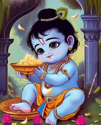
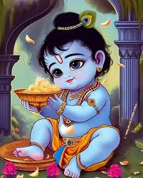

“Love is not something you find, it is something that finds you.”
“Love is the essence of life and the key to all happiness.”
“In love, there is no room for ego or self-centeredness.”
“Love is the greatest binding force that unites all beings.”
“True love is selfless and unconditional.
Lord Krishna, one of the most revered deities in Hinduism, is often associated with love, compassion, and divine playfulness. Here are some "love notes" or key aspects of Lord Krishna's teachings and stories that revolve around love:
1. Divine Love with Radha:
The love between Lord Krishna and Radha symbolizes the eternal bond between the soul and the Divine. Radha’s unconditional love and devotion for Krishna represent the highest form of spiritual love, where the devotee is wholly immersed in the beloved.
2. Rasa Lila:
The Rasa Lila, a divine dance that Krishna performed with the Gopis (milkmaids) of Vrindavan, is a celebration of divine love. This dance represents the joyous and pure love between the Divine and His devotees, transcending the material world.
3. Love for All Beings:
Krishna’s love is universal, extending to all living beings. His teachings in the Bhagavad Gita emphasize compassion, selfless love, and the importance of loving all of creation, as it is an expression of God’s own love.
4. Friendship with Sudama:
Krishna’s friendship with Sudama, a poor Brahmin, illustrates the selfless and unwavering love Krishna had for his friends. Despite Sudama's poverty, Krishna treated him with the utmost respect and love, demonstrating that true love transcends material wealth.
5. Love in the Bhagavad Gita:
In the Bhagavad Gita, Krishna teaches Arjuna about selfless love (Bhakti). He emphasizes that true love for God is expressed through devotion, surrender, and righteous action, without any desire for personal gain.
6. Mischievous Love:
Krishna’s childhood stories are filled with playful mischief, such as stealing butter and teasing the Gopis. These tales highlight the innocent and joyful love that Krishna shared with everyone around him, especially the village women and children.
7. Compassionate Protector:
Krishna’s love is also protective. He is known for protecting his devotees from danger, such as when he lifted the Govardhan Hill to shield the villagers from torrential rains. This act symbolizes his role as a compassionate guardian who cares deeply for those who love him.
8. Message of Universal Love:
Krishna’s life and teachings encourage us to love beyond boundaries—be it caste, creed, or species. He inspires us to see the Divine in everyone and everything, promoting a message of universal brotherhood and love.
9. Flute as a Symbol of Love:
Krishna’s flute is a symbol of his divine love and the enchanting power of his presence. The sound of his flute captivated the hearts of everyone in Vrindavan, calling them to a higher, spiritual love.
10. Love for His Parents:
Krishna’s deep love and respect for his parents, both his birth parents Devaki and Vasudeva, and his foster parents Yashoda and Nanda, show the importance of familial love and duty.
These notes reflect the profound and multifaceted nature of Lord Krishna's love, which encompasses romantic, parental, friendly, and divine dimensions, each offering deep spiritual insights and inspiration.